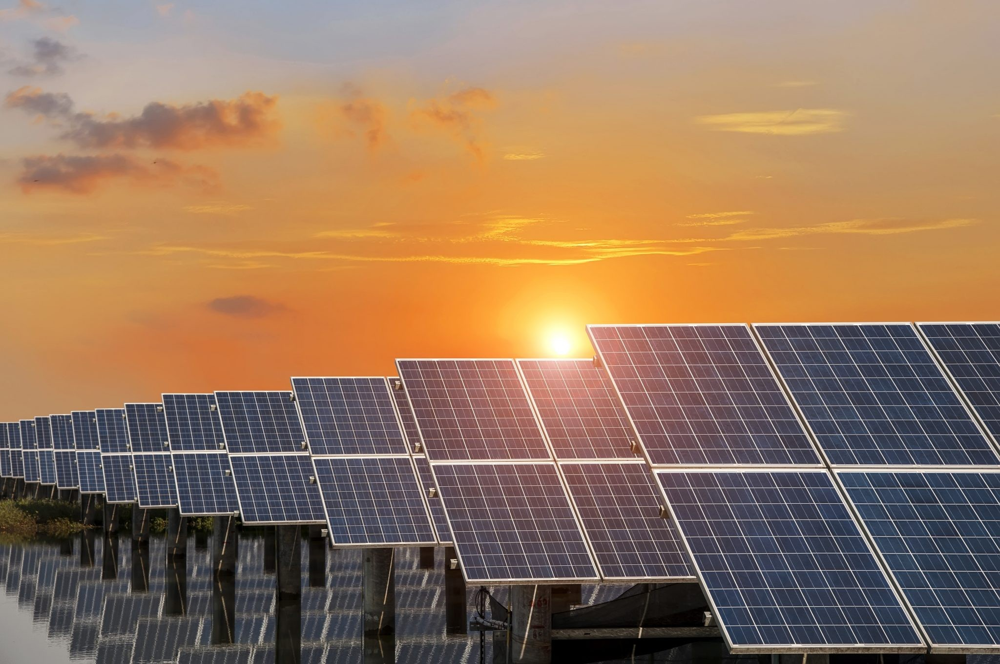
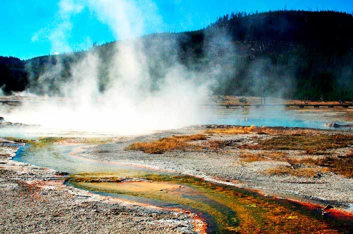
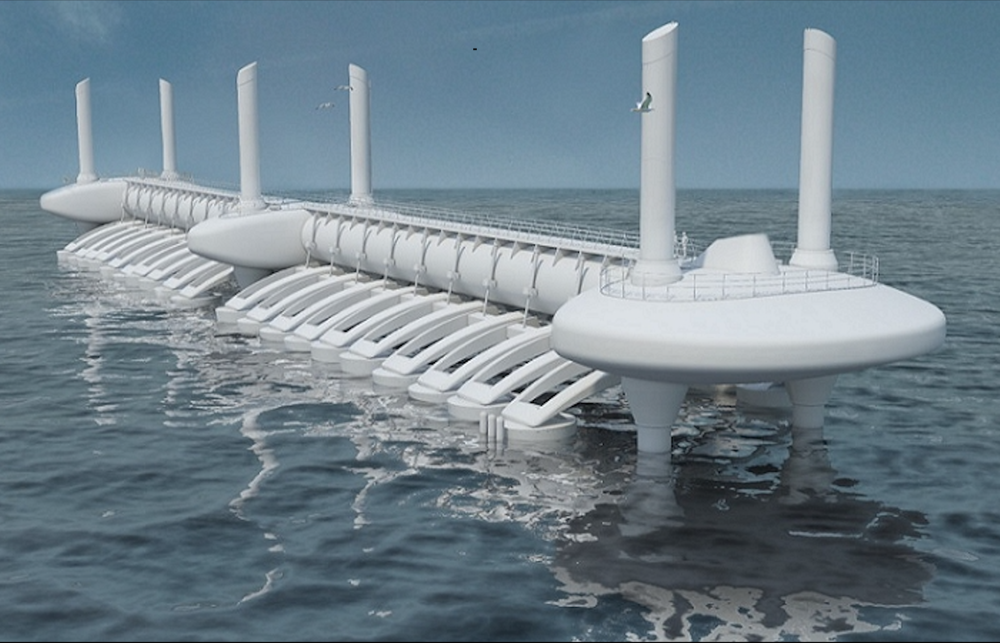
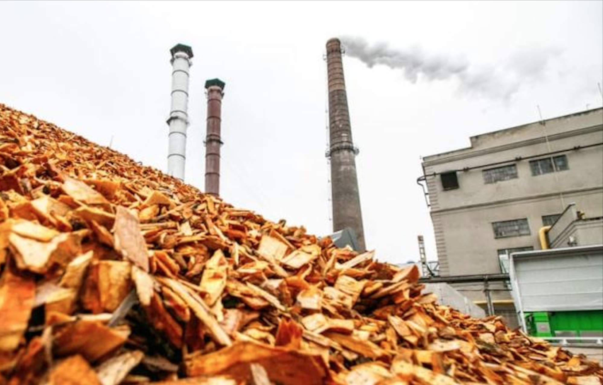
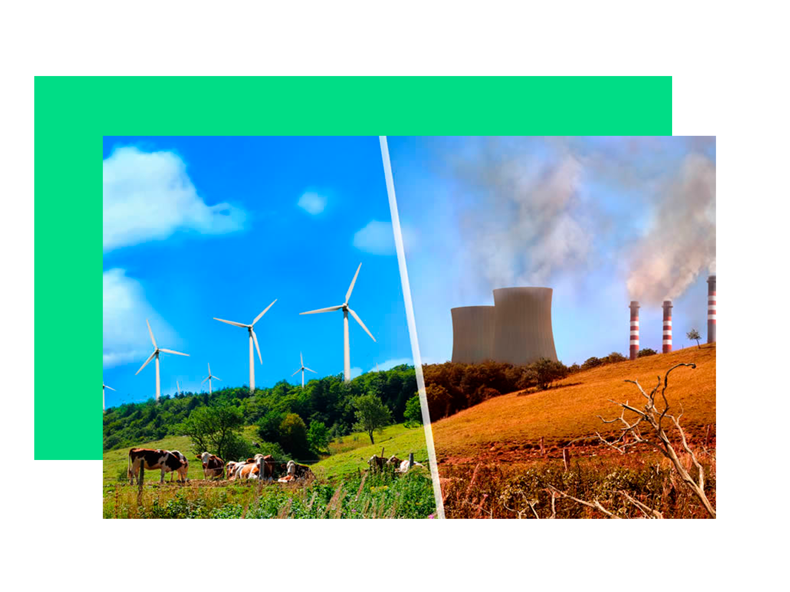
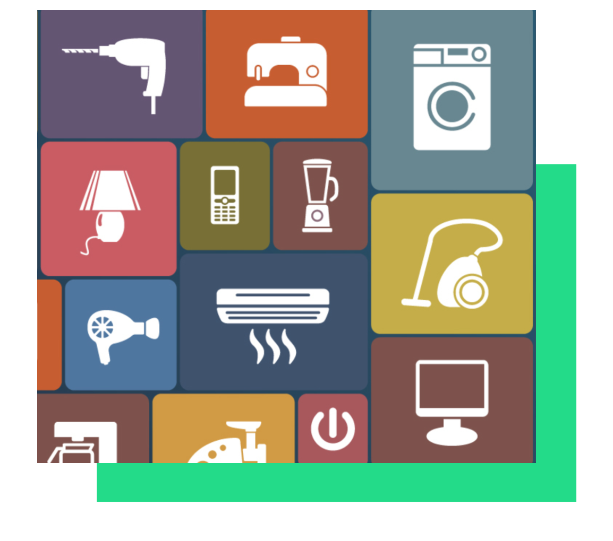
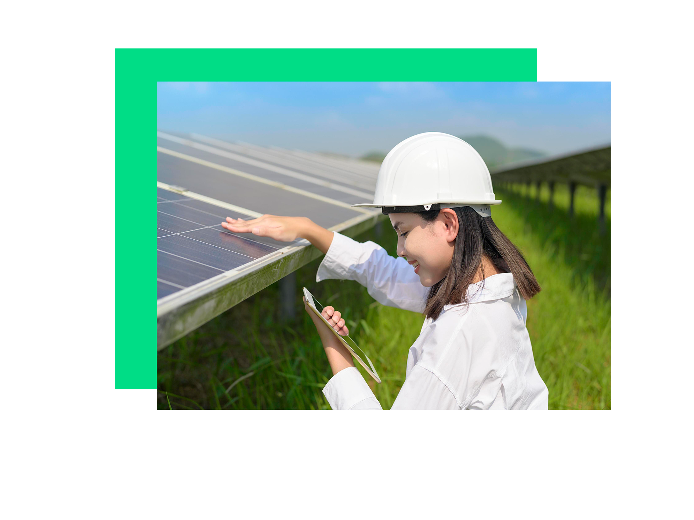

|
|
Types of Renewable Energies
|
Solar  One of the easiest energies to harness, we get it from the sun. (Lakeh, 2022) |
Wind Energy 
Not available at home, this type of energy comes from wind turbines that are usually located on large windy areas. (Lakeh, 2022) |
Hydroelectric 
Although similar to wind energy, the technology used on water and not air. (usually found in oceans and/or rivers). (Lakeh, 2022) |
|
Geothermal  It is the heat within the planet earth that can be harnessed in some areas. (Lakeh, 2022) |
Tidal  Also known as ocean energy, is the energy we can get from tides. (Lakeh, 2022) |
Biomass  We get this energy from heat, by burning organic waste. (Lakeh, 2022) |
| Benefits of Renewable Energies |  |
| Some of the benefits that come from clean energies is generating energy that doesn’t produce any kind of greenhouse gas emissions, since it does not use fossil fuels or any kind of elements that creates air pollution. It diversifies the energy supply and reduces the dependence on imported fuels as well as create economic development and jobs in countries by helping manufacture, install and maintain in good shape each of the machines used. (US EPA, n.d.) |
| |
|
|
| As any tourist city, hotels are essential to the economy, but the more hotels you have the more energy you need. Hotels spend 25% of the revenue on purely energy for the light, air conditioner/thermostat, etc. This is purely using non-renewable energy, but if more hotels changed to renewable energy their energy expenses would decrease to 20%, meaning they would be earning 5% more renew from their sales on reservations (smarkia, 2016). |
|  | |
Some of the most energy consuming electrodomestics are:
|
Renewable Energies and Climate Change
|
|
|
| Renewable Energies and You |  |
| Advocating for Renewable energy sources, even if you’re not using them at home, will help us to transition to a cleaner future! Even if you’re not able to install solar panels, your power company may offer clean sources of energy. If it isn’t available through your utility, you can contact us to purchase renewable energy certificates to offset your use. |